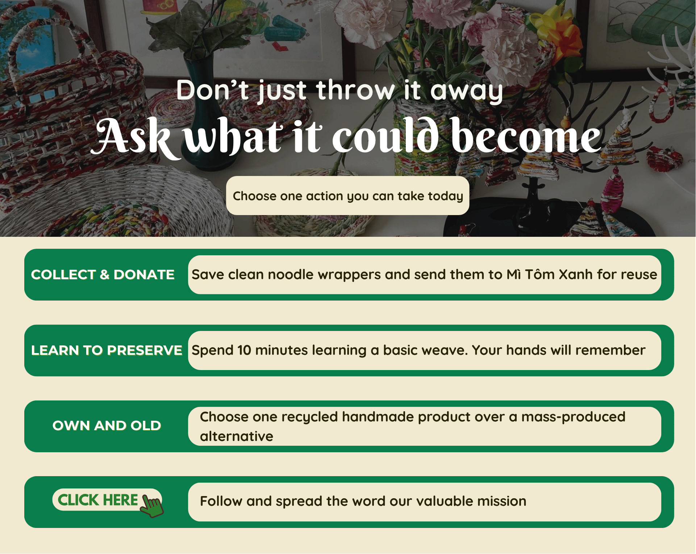

<section id="s11-new" style="position: relative;">
  

  <!-- Video hiệu ứng đè lên ảnh nền (Nằm mép trên) -->
  <video class="s11-overlay-video" id="video-s11" muted playsinline>
    <source src="assets/section_11.mp4" type="video/mp4">
  </video>
  <!-- Nút link tới Facebook (tàng hình) -->
  <!-- Bạn có thể chỉnh top, left, width, height trực tiếp ở đây -->
  <a href="https://www.facebook.com/your-facebook-page" target="_blank" rel="noopener noreferrer" class="s11-fb-btn"
    style="top: 90%; left: 15.5%; width: 16%; height: 4%;" aria-label="Facebook Link"></a>
</section>